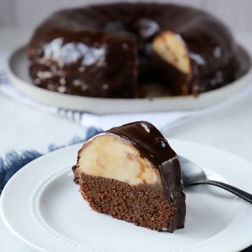

Chocoflan

Ingredientes
Para el queque
- 1 3/4 taza de harina para todo uso sin polvos
- 1/2 taza de cacao en polvo
- 1/2 cucharadita de bicarbonato de sodio
- 1 cucharadita de polvos de hornear
- 1 pizca de sal
- 115 grs de mantequilla sin sal a temperatura de ambiente
- 1 taza de azúcar granulada
- 2 huevos
- 1 taza de leche líquida
Para el flan
- 1 tarro de leche condensada
- 1 tarro de leche evaporada
- 170 grs de queso crema a temperatura de ambiente
- 3 huevos grandes + 1 clara de huevo
- 1 cucharada de extracto de vainilla
Preparacion
- Precalentar el horno a 180°C (350°F)
- En un bowl mezclar la harina, cacao, bicarbonato, polvos de hornear y sal. Reservar.
- En otro bowl o mezcladora batir la mantequilla por unos 2 minutos, agregar el azúcar y batir unos 3 minutos más.
- Añadir los huevos uno a uno.
- Luego poco a poco la mezcla de harina en conjunto con la leche
- 115 grs de mantequilla sin sal a temperatura de ambiente
- Unir todo muy bien y colocar esta mezcla en molde idealmente con un hueco en el centro de unos 20 cms de diámetro.